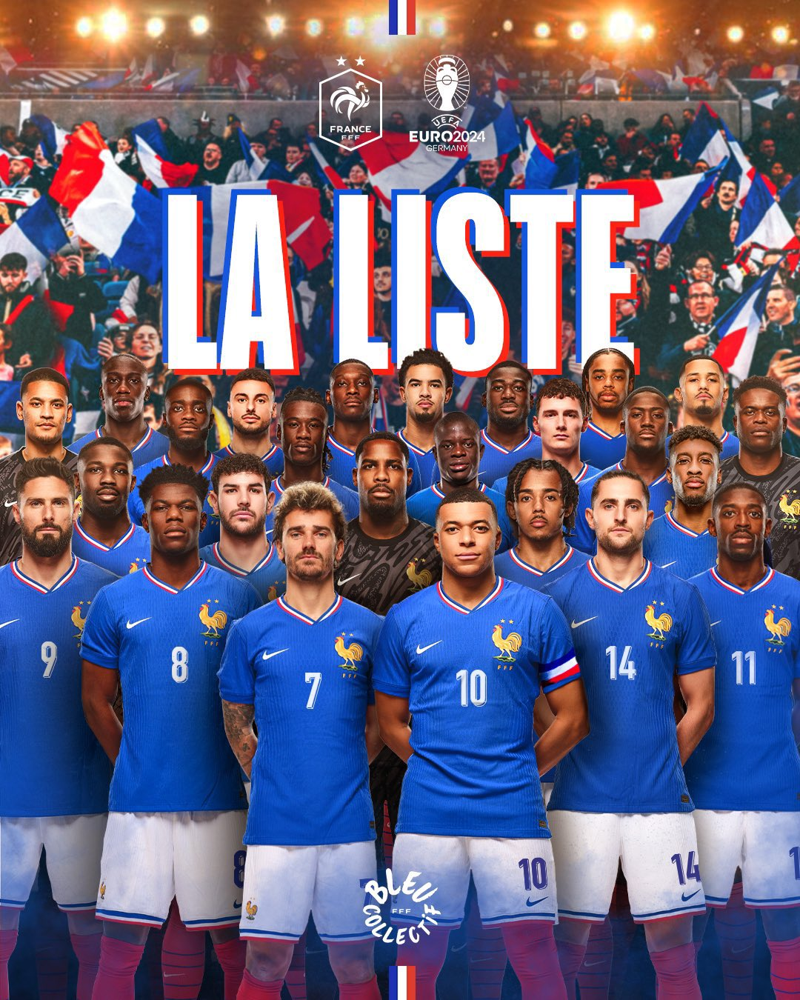
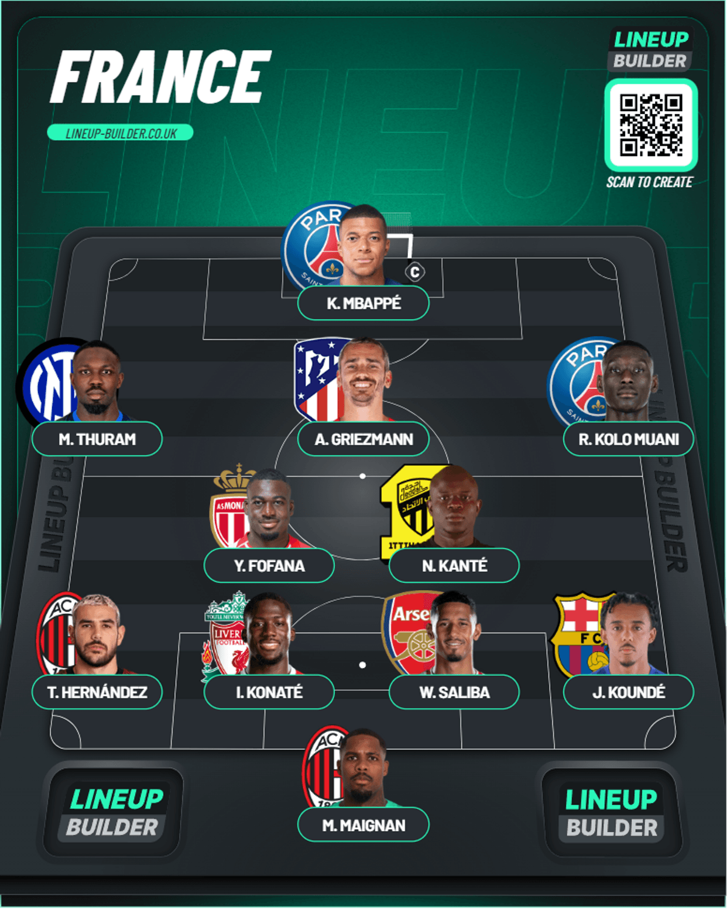

France Squad
Table of Contents
France Squad Reaction


World Cup finalists. Absolutely one of the favorites. They have a strong squad headed by new Real Madrid recruit Kylian Mbappé. Let’s get into it
Goalkeeper
You’ve got 2 great options in Mike Maignan and Alphonse Areola who have had good seasons for their respective clubs, but I don’t think you can look past Maignan for this spot, and I’d go for him too
Defense
We’re looking at a new generation of defenders after Varane announced his retirement from internation football after the World Cup 2 years ago. Saliba was part of a solid defensive unit at Arsenal and I think he’s a lock at the center of defense. Along with him, I’d use Konate over Upamecano because he can be mistake-prone and having that wouldn’t be great for morale, and he did start in the World Cup final which resulted in them letting 2 goals in fairly quickly. In terms of full backs I don’t think I can see beyond Theo Hernandez and Jules Kounde for LB and RB respectively after excellent seasons for their clubs. For backup, you’ve got Jonathan Clauss and Ferland Mendy to go for.
Midfield
We’ve got a familiar face returning to this squad in N’Golo Kante. I was surprised to be honest, but I guess he wanted some experience in that squad for the midfield given the talents coming through with the likes of Camavinga, Tchouaméni, Zaire-Emery. You’ve got the experience with the likes of Rabiot, Greizmann(Was pretty much like Kante in the World Cup) along with Kante. Then you’ve also got another pick in Youssouf Fofana who’s had a really good season with Monaco and is on the radar of some clubs in the summer as well. In terms of midfield if it’s 3 in a 4-3-3. I’d take Tchouaméni, Camavinga and Fofana or if it’s a 3 in a 4-2-3-1, I’d go with Tchouaméni, Fofana and maybe Griezmann. I think I’d prefer a 4-2-3-1 for the lineup I’m making here so I’d take either Kante or Tchouaméni but I’m picking the former for old times sake. He’s been picked for a reason so I’m thinking he might start
Attack
One person who isn’t dropping from this attack is the new Real Madrid signing Kylian Mbappe(Also the captain). It feels so much better we won’t have this saga every damn summer window. Along with him, you’ve got so many options. Bradley Barcola is one to watch after he’s had a great breakout season along with Zaire-Emery. Marcus Thuram had a storming season with Inter as they won the Serie A so he’s a good option there. Then you’ve got Kolo Muani who’s had a really good season as well after arriving at PSG. His horrific miss at the World Cup aside I’ve always rated him as a solid ST. I think I’d go with Thuram on the left, Mbappe down the middle(Will have to get used to it at Madrid) and Kolo Muani(In a recent friendly it seemed to work in that way). It could always change. Let’s see
How I’d lineup

The Mbappe transfer hasn’t shown up in this database sadly 😅